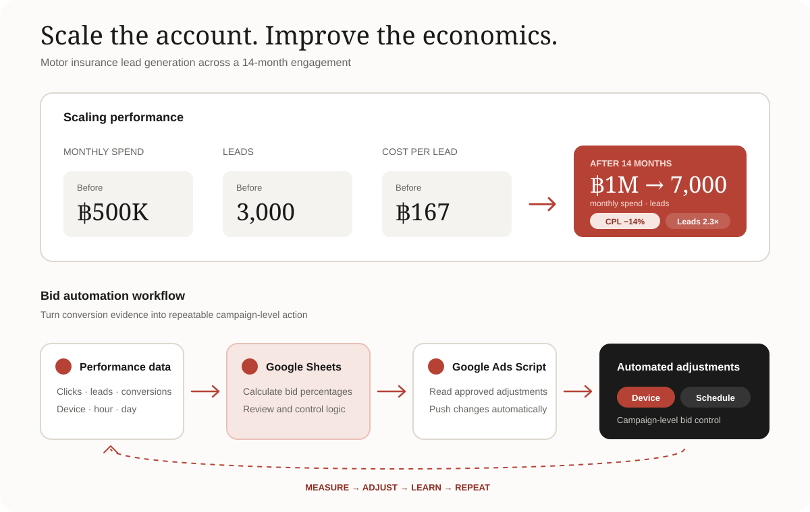

Search relevance
Used Quality Score to diagnose friction
Focused on high-converting keywords and improved the connection between search intent, ad messaging, expected CTR, and landing-page relevance.
Frank · Motor insurance · Performance marketing
I scaled Google Ads from ฿500K to ฿1M per month while leads grew from 3,000 to 7,000—combining search relevance, landing-page optimization, measurement, and automated bidding.
Leads, from 3,000 to 7,000
Estimated cost per lead
Monthly Google Ads spend at scale
Months of sustained optimization
The challenge
The account started at approximately ฿500K per month and generated around 3,000 motor-insurance leads. Scaling required more than expanding bids: high-converting keywords needed stronger relevance, landing pages needed a better experience, and campaign decisions needed reliable conversion evidence.
The commercial goal was clear: increase lead volume while protecting—and improving—cost efficiency.
The growth system
Search relevance
Focused on high-converting keywords and improved the connection between search intent, ad messaging, expected CTR, and landing-page relevance.
Landing experience
Partnered with product and website teams to create and optimize campaign-specific landing pages that supported both conversion and landing-page experience.
Measurement
Implemented conversion tracking and extensive Google Analytics analysis to monitor traffic quality, leads, conversion rates, and performance growth.
Automation
Built a Google Ads Script that pulled adjustment percentages from Google Sheets and automatically updated device and campaign-schedule bids.
The workflow combined human control in Google Sheets with repeatable deployment through Google Ads Scripts.

The result
Spend increased 100%, leads increased 133%, and estimated CPL improved from ฿167 to ฿143.
What I learned
Paid-search efficiency improves when media, product experience, measurement, and automation reinforce each other.
The strongest gains did not come from one bidding tactic. They came from improving the complete path—from the search query and ad, through the landing page, to conversion evidence and repeatable bid adjustments.
Recognition: The bid-automation work was showcased as part of Google Blue Belt certification.